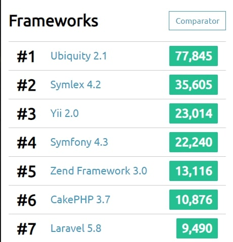

Symfony, framework
Философия Symfony
В процессе изучения фреймворка Symfony я часто задавался вопросом... "Как тебя понять, симфони?". Ответ на этот вопрос был получен не так быстро, как мне хотелось, но все-таки я его получил. И с радостью поделюсь опытом с вами.
Долгое время приходилось писать на Yii2, иногда Laravel. Многое в этих фреймворках уже привычно, знаю что где находится и как лучше реализовать. Но к счастью, желание развиваться в сфере у меня есть, да и причин для изучения чего-то нового всегда предостаточно. Я решил напасть на Symfony. Честно говоря, первые впечатления были очень противоречивы. С одной стороны, как-то все сложно, с другой очень элегантно и правильно. Но со временем пришло понимание, что Symfony всеми своими силами старается навязать свой подход к написанию кода. И знаете, это очень даже хорошо!
Для тех, кто любит говорить про слоупочность Symfony. Рейтинг phpbenchmarks. 
{kind=link}
Все дело в том, что Symfony идет в ногу со временем, старается соответствовать PSR, использует лучшие практики (которых, к слову, еще не было на момент выхода Yii2), паттерны и т.д. В этом, несомненно, его плюсы. Но для тех кто "только пришел", это может показаться сущим адом. Разумеется, можно в процессе знакомства с фреймворком изучать все тонкости современных стандартов, но все же мое мнение - Symfony для опытных программистов. Не поймите меня неправильно, хорошо делать сайты можно и на других фреймворках. Просто Symfony предоставляет больше возможностей в плане архитектуры.
Обратной стороной медали является то, что в относительно небольшом проекте, возможно, стоит задуматься - нужно ли использовать Symfony. Здесь, как раз хорошо зайдет какая-нибудь CMS, на которой можно сделать проект быстро и не менее качественно. Просто взяли, быстро сделали, все довольны. Заказчик счастлив тому, что проект готов уже вчера, а вы получили свою награду.
Другое дело, когда речь идет о долгосрочной перспективе. Как сейчас помню, работая в одной крупной телеком компании мы просили разработчиков добавить относительно небольшой функционал к существующему софту. Они добавили, без проблем, правда почти через год. И такой случай далеко не единичный. Просто эти самые большие компании предпочитают делать железно, пусть очень дорого и супер медленно. И вот в похожих ситуациях как нельзя лучше зайдет Symfony, имея уровень Enterprise-проектов.
Несомненно, имея желание вы освоите любой фреймворк! Но надо ли это вам сейчас?! Если учить для того, чтобы учить, то я бы дал совет познакомиться получше с паттернами, PSR разных версий и прочим (благо выбор есть), а потом уже вернуться к Symfony. Если все же решились, то жду вас на следующих страницах.